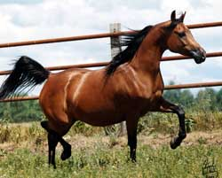
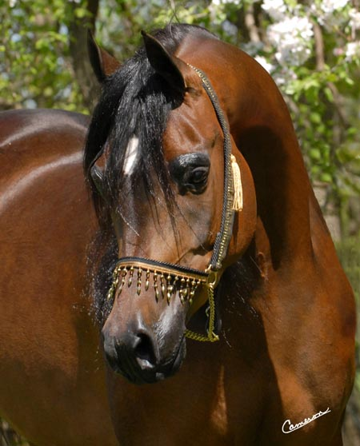
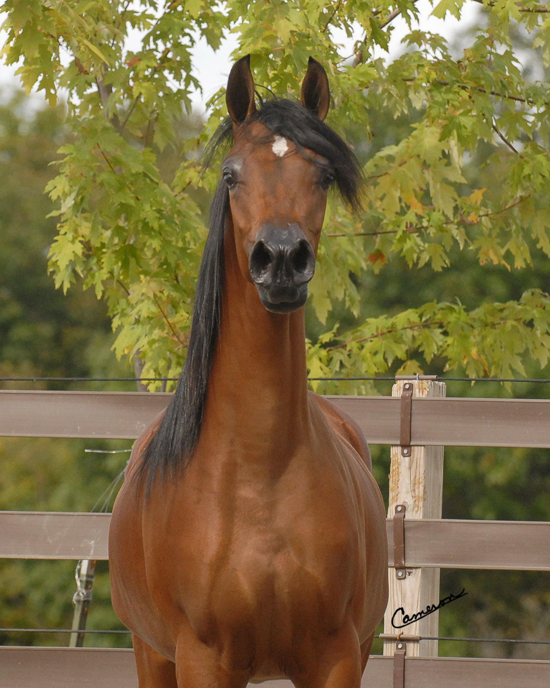
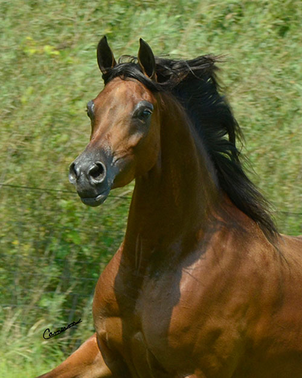
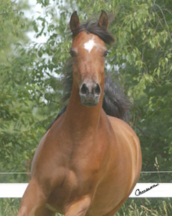
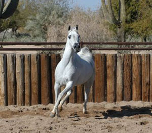
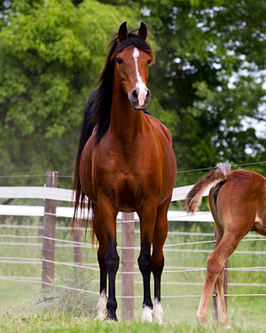
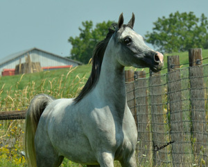

Broodmares

Mahogany Saarah
(Padrons Mahogany x Esprijala)
1993 Bay Mare
Saarah (meaning Princess) is just that. A perfect picture of lovliness. Her beauty and
refinement and is always a lady. A very sweet mare. Her pedigree is a wonderful blend of
the best Russian and gainey bloodlines. She consistently passes on her very best traits,
her long shapely neck beautiful head and her loving personality. Her foals are always very
showey and trainable.
In foal to Ever After NA for 2014, Saarah turned 20 yrs old in May this year so we are
very excited to have her in foal to Ever After. We are hoping for a filly as she has not
had a filly since Gabriella ORA.

Arwen WW
(DA Vinci FM x Mahogany Saarah)
2004 Bay Mare
Arwen is our crown Jewel and we feel will be a tremendous producer of beauty and type. She
is a breath takingly beautiful and stands 15.3 H. Believe me when I say if you were
standing in her presents you would not be able to take your eyes off her she truly is her
fathers daughter in every way.
She also is a full sister to the Da Vinci daughter that rocked the Midwest Invitational
Sale in 2008 after we sold her and was renamed Gabriella ORA and was purchased by Umberto
Bonnini of Brazil. Gabriella also went Top Ten Open Scottsdale Jr.Fillys. We are full of
anticipation with coming of her foals in March of 2010. We have embryo transfer twins by
U.S. National Champion Marhaabah and she herself is in foal to World Champion Stavial.

Gisele WW
(Gazal Al Shaqab x GA Psypress)
2008 Bay Mare
The many faces of the lovely Gisele a true Princess and very much in love with herself.
This filly has attitude that makes everyone take notice. She has a breeders pedigree that
not only includes great sire lines but a tail female that goes directly to the Aristocrat
mare Hal Ane Versare a true beauty in her own right. We are very excited about this young
filly for our for our future.
Gisele is in foal to ZT Magnanimous for 2014

Pashmena WW
(Bahaa AA x Gisele WW)
2016 Grey Arabian Filly
Pashmena had a beautiful black filly in March 2020 by Sultan GK (WW Stivallea x Al Magna).
She is back in foal to Sultan GK for 2021.
Congrats on a Beautiful Reserve in Yearling Fillies Great Lakes Arabian Trifecta held at
the WMAHA Fall Classic with Trainer Cathy Murphy- Economy.
Thank you Brittney Wright for your wonderful conditioning of this incredibly beautiful
filly and taking such great care of her while at Full Moon Arabians.
Back in foal to Sultan GK for 2021.

RD Thyme-X
(Pyro Thyme SA x RD Falcons Fanci)
2007 Bay Mare
Purchase at Scottsdale 2009 from Ray Dawn Arabians to add to our line of broodmares. We
love her charisma and those beautiful eyes. A lovely tall and elegant filly with lots of
attitude and a great breeder pedigree. You may see her in the show ring soon!
Her colt Rolex WW has been sold and that he is being Exported to Libya.

Royal Jewel
(Selket Royal Red x Selket Khadence)
2003 Bay Mare
Line bred Russian filly. Jewel is 15H, is in training and after only 3 weeks can walk trot canter and is being ridden on trails and loves it, wonderful smooth gates. Great Endurance prospect, would be a very pretty western horse. Even hunter or dressage prospect. Jewel is very athletic. Sweepstakes Nominated.

Luminesa - SOLD
(Luminar Amadeus x WA Marlanina Lee)
2000 Grey Mare
A Great opportunity for any serious breeding program. Luminesa is sired by Brazilian
National Champion Lumiar Amadeus and out of one of the top producing Bey Shah daughters WA
Marlaina Lee. She is a Maternal sister to the beautiful multi Champion mare JJ La
Estrella. Luminesa is in foal to National Champion KM Bugatti for Feb. 2011.
Luminesa is a beautiful mare with big dark eyes with a great look at me attitude with and
power and motion to burn, her Bugatti foal should not only light up the Halter arena but
will be an incredible performance horse as well.
Her 2011 colt Bolero WW (KM Bugatti x Luminesa) was purchased by Juan Marcos Perez Mari of
Villabemosa, Mexico.
Her 2012 filly Jazmeenah WW received a Top Ten in Yearling filly Amateur owner handler
Scottsdale 2013.
Luminesa is in foal to ZT Marwteyn for 2014.

GA Psypress - SOLD
(Padrons Psyche x GA Grand Empress)
2000 Bay Mare
Lovely daughter of the Great Padron Psyche out of a US Top Ten Bey Shah daughter out of
the Aristocratic mare Hal Ane Versare. Beauty produces beauty, and this mare has a
pedigree full of type. She would make a excellent addition to any program. She really
produces that look at me attitude that we all love for the show ring.
Her filly Gisele WW by Gazal Al Shagab is a real beauty and has plenty of snort and blow.
We are looking forward to breeding her in 2011. Psypress open for 2010 and could be bred
to the stallion of your choice if purchase before Feb. 2010 at which time will be breeding
as we don’t want her to be open another year.
Her 2011 filly Petra WW (Rough Justice x GA Psypress) was exported to the UAE.
Her 2012 filly Pescha WW (Escape IBN Navarrone D x GA Psypress) is available for
purchase.
GA Psypress is in foal to Pogrom for Feb. 2014.

GW Marlinda - SOLD
(Marwan Al Shaqab x GW Rockette)
2006 Grey Mare
Purchase from Virgina Wood 2008. We added this lovely Marwan daughter to our broodmare
band not only because she was by Marwan but I loved her tail female line an NV Natasham
grandaugter.
I remembered seeing her picture in the times when Pat and I first started into the
business of breeding Arabians. I thought this was a great opportunity to have a mare with
a incredible peigree and from a great breeding program and a 15/16 sister to Star of
Marwan.